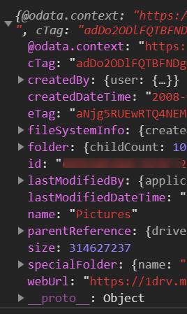
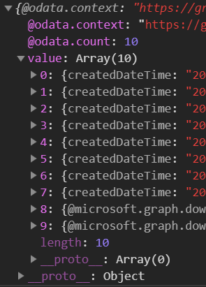

自從去年寫了兩篇跟 O365 Graph 有關的文章後，就停了好長的一段時間，長到連登入的方法都改變了，(登入篇 也做了相對應的更新)
存取檔案可以算是很常見的需求，所以這次要來研究如何讀寫在 OneDrive 上的檔案
權限
當然要存取檔案系統，就必須申請權限，操作檔案需要請求 Files.Read 或 Files.ReadWrite 讀寫權限。
基本概念
Microsoft Graph 針對檔案操作有兩種類型的物件
Drive: 代表著使用者裝檔案的容器或檔案的基本資訊DriveItem: 呈現檔案或是資料夾本身的詳細資訊
這裡我只會針對 DriveItem 去做展示，大部分的操作也是針對 DriveItem 資料類型去做操作。
API 操作
列表
-
/drivers/{drive-id}: 取得特定 drive 的 metadata -
/drive/root: 取得目前使用者預設根目錄 -
/drive/root/children列出目前使用者根目錄下的所有資料夾和檔案項目 -
/drive/root/search: 搜尋根目錄 -
/drive/sharedWithMe: 列出分享給使用者的檔案清單 -
/drive/special/{special-folder-id}: 進入特定的資料夾，特殊資料夾有以下Name ID Documents documents Photos photos Camera Roll cameraroll App Root approot Music music
範例程式
1 | getPhotos() { |
-
此 API 呼叫會回傳
Drive型別的資訊
1 | getPhotos() { |
-
取得 Photos 資料夾下所有的檔案項目
-
回傳的資料型別為
DriveItem
-
如果是檔案，就會出現
@microsoft.graph.downloadUrl，如果是資料夾就不會
新增資料夾
建立資料夾當然需要擁有寫入資料夾的權限，記得要授權 Files.ReadWrite
可以使用的 API 有
POST /drives/{drive-id}/items/{parent-item-id}/childrenPOST /groups/{group-id}/drive/items/{parent-item-id}/childrenPOST /me/drive/items/{parent-item-id}/childrenPOST /sites/{site-id}/drive/items/{parent-item-id}/childrenPOST /users/{user-id}/drive/items/{parent-item-id}/children
範例程式
1 | createFolder() { |
- line 5: 決定當遇到名稱重複時的動作
failreplacerename: 在名稱後給予流水號，例如fname、fname 1、fname 2
- 回傳的 response 內就會包含這一次建立資料夾的相關資訊
修改名稱 / 移動檔案
1 | renameItem() { |
-
要使用
patch的方法 -
如果移動資料夾或是檔案，要修改的對象為
parentReference裡的 id1
2
3
4
5
6const driveItem = {
parentReference: {
id: '{new-parent-folder-id}'
},
name: 'new-item-name.txt'
};
刪除檔案
刪除檔案就比較直覺了
可以使用的 API 有
DELETE /drives/{drive-id}/items/{item-id}DELETE /groups/{group-id}/drive/items/{item-id}DELETE /me/drive/items/{item-id}DELETE /sites/{siteId}/drive/items/{itemId}DELETE /users/{userId}/drive/items/{itemId}
範例程式
1 | deleteItem() { |
下載檔案
透過 API 方式取得檔案的內容，可以使用的 API 有
GET /drives/{drive-id}/items/{item-id}/contentGET /groups/{group-id}/drive/items/{item-id}/contentGET /me/drive/root:/{item-path}:/contentGET /me/drive/items/{item-id}/contentGET /sites/{siteId}/drive/items/{item-id}/contentGET /users/{userId}/drive/items/{item-id}/content
範例程式
1 | import { saveAs } from 'file-saver'; |
- 偷懶一下，安裝
file-saver套件 - 設定
responseType至blob
結語
更多的相關操作可以參閱官方文件，文件的部分寫得算是很詳細。文件的連結我就放在下面的參考資料內